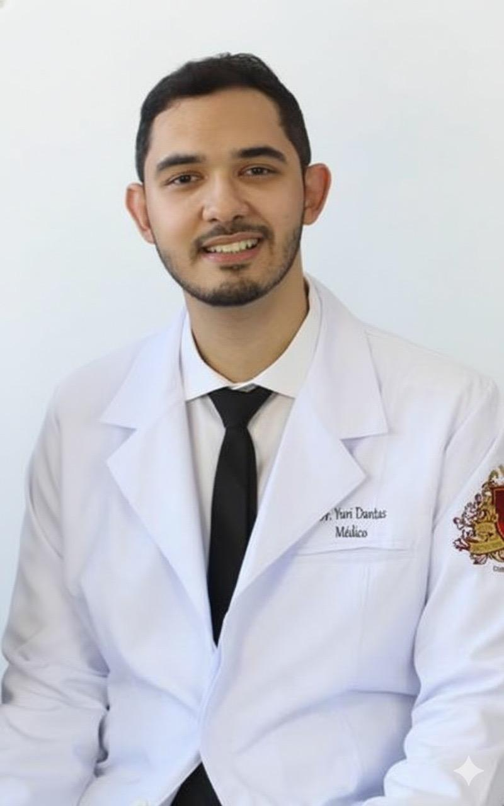
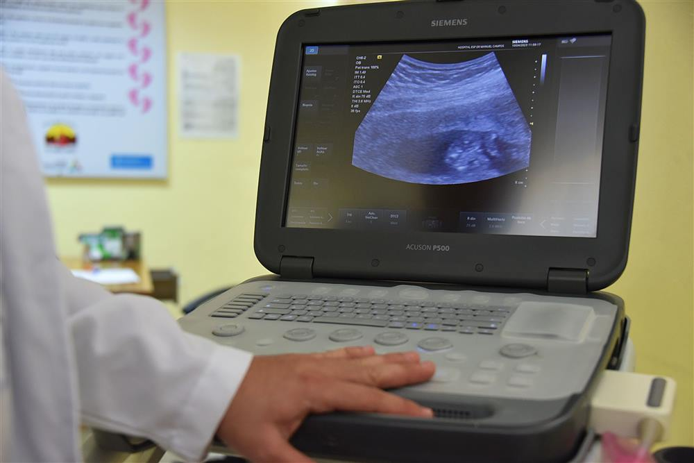
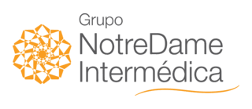
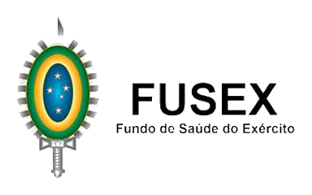
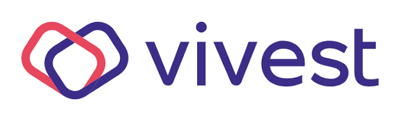

Precisão no diagnóstico,
presença no cuidado.
Atuação em Diagnóstico por Imagem com foco em Ultrassonografia — unindo rigor técnico, atualização constante e uma escuta atenta a cada paciente.


Diagnóstico por Imagem“Cuidar vai muito além de realizar um diagnóstico.” Dr. Yuri Dantas
Cuidar vai muito além de realizar um diagnóstico — é escutar com atenção, compreender cada história e oferecer segurança em cada etapa do atendimento. É com essa visão humana e sensível que o Dr. Yuri atua na medicina.
Formado em medicina pela Universidade José do Rosário Vellano (UNIFENAS) em 2021, o Dr. Yuri especializou-se em Diagnóstico por Imagem pela FATESA – Ribeirão Preto, com atuação voltada principalmente para Ultrassonografia.
É titulado pelo Colégio Brasileiro de Radiologia (CBR) e pela Associação Médica Brasileira (AMB), reconhecimento que reforça sua competência e compromisso ético com a medicina de qualidade.
Autor de publicações acadêmicas em congressos nacionais e internacionais, o Dr. Yuri tem contribuído ativamente para o avanço científico na área da Radiologia e Ultrassonografia.
Como Membro Titular da Sociedade Brasileira de Ultrassonografia (SBUS), da Sociedade Paulista de Radiologia (SPR) e do Grupo de Estudos em Ultrassonografia (GEUS), mantém-se em constante atualização para oferecer sempre o melhor cuidado aos seus pacientes.
Com atenção aos detalhes e respeito por cada pessoa que confia em seu trabalho, o Dr. Yuri Dantas busca unir ciência, ética e contato humano para fortalecer a relação médico-paciente e garantir diagnósticos cada vez mais precisos.
Trajetória acadêmica
Graduação em Medicina
Universidade José do Rosário Vellano — UNIFENAS
Diagnóstico por Imagem
FATESA — Ribeirão Preto, com atuação voltada principalmente para Ultrassonografia
Colégio Brasileiro de Radiologia (CBR)
Titulação que reforça competência técnica e compromisso ético com a medicina de qualidade
Associação Médica Brasileira (AMB)
Reconhecimento nacional de qualificação médica
Sociedade Brasileira de Ultrassonografia (SBUS)
Atualização contínua em técnicas e protocolos de ultrassonografia
Sociedade Paulista de Radiologia (SPR)
Participação ativa na comunidade de radiologia do estado de São Paulo
Grupo de Estudos em Ultrassonografia (GEUS)
Estudo e discussão continuada de casos em ultrassonografia
Publicações em congressos
Autor de trabalhos apresentados em congressos nacionais e internacionais de Radiologia e Ultrassonografia
Diagnóstico por imagem, com foco em ultrassonografia
Ultrassonografia geral e abdominal
Avaliação de órgãos e estruturas abdominais com atenção a detalhes clínicos relevantes.
Ultrassonografia obstétrica e ginecológica
Acompanhamento de gestação e saúde da mulher com cuidado e clareza na comunicação.
Ultrassonografia de partes moles
Investigação detalhada de tecidos, articulações e estruturas superficiais.
Ultrassonografia com doppler
Análise de fluxo vascular para investigação clínica complementar.
Laudos e diagnóstico por imagem
Laudos precisos, redigidos com rigor técnico e linguagem clara para o paciente e equipe clínica.
Atendimento humanizado
Escuta atenta e explicações claras em cada etapa, do agendamento ao resultado do exame.
Lista de exames sujeita a confirmação — ajuste conforme a agenda e os equipamentos disponíveis no consultório.
Exames de Ultrassonografia
Realizamos mais de 30 tipos de exames com equipamentos de última geração.
Ultrassonografia geral
- Abdômen total
- Próstata via abdominal
- Próstata via transretal
- Pélvica via abdominal
- Transvaginal
- Articulação
- Partes moles
- Tireoide
- Abdômen superior
- Aparelho urinário
- Bolsa escrotal
- Parede abdominal
- Região inguinal
- Mamas
- Axilas
- Obstétrica via transvaginal
- Obstétrica via abdominal
Ultrassonografia com doppler
- Carótidas e vertebrais
- Bolsa escrotal
- Abdômen total
- Hepático
- Renal
- Fístula arteriovenosa
- Venoso de membros superiores
- Venoso de membros inferiores
- Arterial de membros superiores
- Arterial de membros inferiores
- Tireoide
- Transvaginal
- Mamas
Locais de atendimento
Centro Médico Dreger
Avenida Frei Vicente do Salvador, 80, Ribeirópolis
Praia Grande - SP
Convênios atendidos



Atendimento particular também disponível. Consulte a recepção para confirmar cobertura e disponibilidade de agenda por convênio.
Agende sua consulta
-
WhatsApp (13) 95543-2674
-
E-mail dr.yuridantas@gmail.com
-
Onde atende Atendimento em 7 clínicas na Baixada Santista — veja todos os locais
-
Horário Segunda a sexta, 8h às 18h
O jeito mais rápido de marcar seu exame é pelo WhatsApp — em poucos minutos você confirma data, horário e convênio.
Chamar no WhatsApp